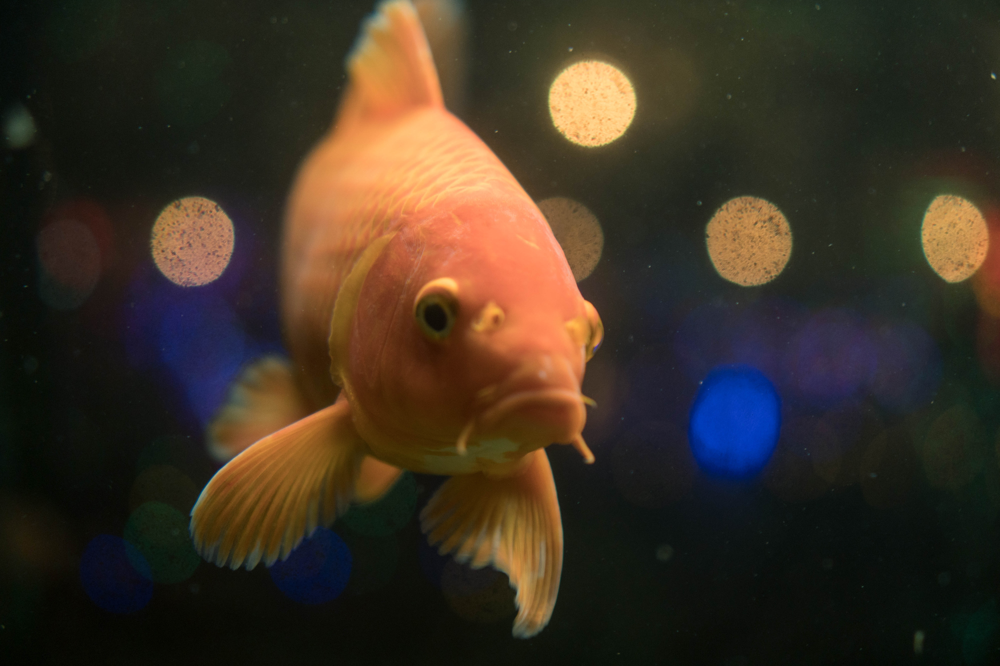
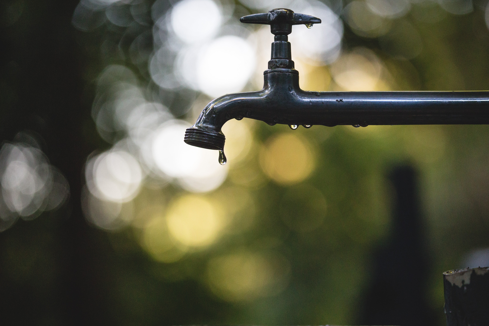

Opening December 10, 2018
This December, get to know the museum's sparkly side. More than 100 stunning objects from our mineralogy department will be displayed on every level of the Museum in this "deconstructed," vertically aligned exhibition. Many found and mined in San Diego County.
The museum has many fascinating specimens in storage that have never been on display—until now. Don't miss this rare backstage glimpse of the Museum's storage areas. You’ll find everything from tiny beetles to enormous whale bones. Patterns and symmetry in scales and feathers, in the twisting spiral of a gastropod shell, in branching antlers and beautiful corals.
Jan 1, 2019 through February 22, 2019
Enjoy the breathtaking photography of Dr. Dan Cartamil, a shark expert and marine biologist at the Scripps Institution of Oceanography, as he explores Baja California's Pacific coast region.

April 26, 2018 through December 31, 2019
An Ice Age site excavated by Museum staff preserves 130,000-year-old mastodon bones, molars, and tusks that show evidence of modification by early humans, dramatically revising the timeline for when humans first reached the Americas.
Rare books, art, photographs, historical documents, and plant and animal specimens come together to prove you don't need to be a scientist to participate in science.

Take a journey through this amazing place we call home. Explore the unique habitats of Southern California and celebrate the abundant variety of life found here.
All life depends on it, including ours. Learn how a changing climate affects our water supply and see live animals that depend on this vital resource.
From dinosaurs to mastodons, travel through 75 million years and dig into the rich fossil history of Southern California and Baja California. The fossils on display were discovered locally by our paleontology team during construction projects.
Take a look at 200 of the weirdest, wildest, and most fascinating animal skulls from our research collection. Mammals, birds, reptiles, and amphibians are on display, showcasing an eye-popping array of horns, beaks, bills, teeth, and more.
Meet Al, a member of our skeleton crew. Allosaurus fragilis, a genus of large theropod dinosaur that lived in North America during the late Jurassic Period, is a relative of T. rex, which lived later. Al's bones are casts made from original bones collected in Utah.
This replica of an extinct megalodon shark was modeled from and inspired by teeth collected from Miocene sandstones in Oceanside, California and near Ensenada, Baja California by Museum paleontology staff. It hangs in the Atrium as part of Fossil Mysteries and is one of best selfie spots in the Museum.